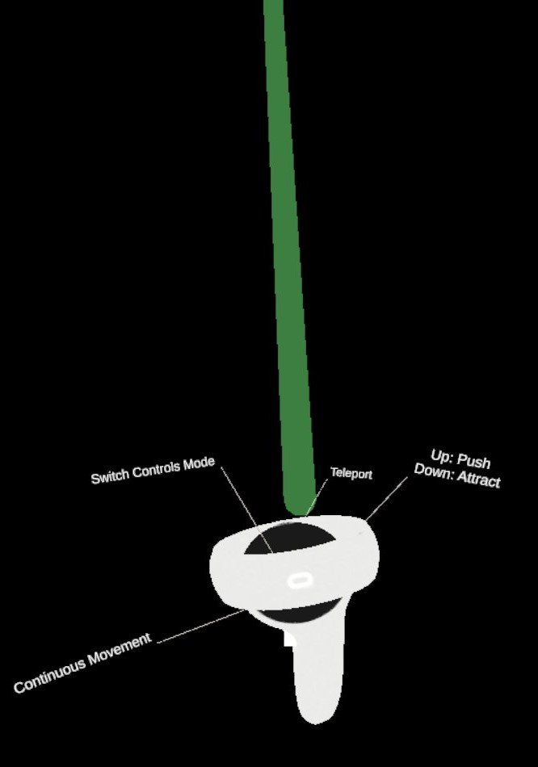

Movement
This allows the user to move around in the Dive Scenes. There are two alternative movement modes:
Teleportation
Represented by a green ray and a green sphere at the end of the ray. The position of the sphere indicates the teleportation target. The user can teleport by pressing the Front Trigger. The teleportation distance can be changed using the Joystick.

Continous movements.
Use moderately for beginners as it is a source of motion sickness. Upon pressing the Front Trigger, the user can move in the direction he translates his controller to. The direction and magnitude of the movement is composed from the individual vectors on the X, Y and Z axis represented by the red, green and blue line respectively.